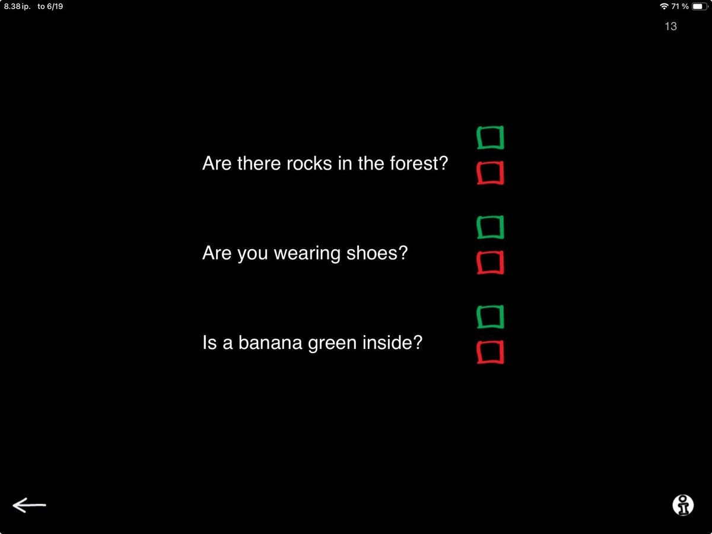

We’re in the process of updating all the materials in SanapsisPro, and I’m happy to share that the first big update is now out. The Comprehension category has been refreshed, with all-new content for each of its four core exercises:
YES-NO
Follow Instructions
Questions Based on Text
Listen to a Story.
To walk you through the updates, I’ll be sharing short posts about each exercise, starting with a favorite: YES-NO questions — the simple, versatile staple in every SLP’s toolkit.
185 Questions
On the surface, this task is very simple. You see a question and two checkboxes (green and red). You read the question to your patient and ask them to respond yes or no. Then you tick the corresponding box.

The questions cover a mix of types:
Related to the patient or the current situation (“Are you wearing shoes?”)
Silly and engaging (“Is a banana green on the inside ?”
Slightly more demanding (“Are there rocks in the forest?“ or “If Ida is older than Tina, was Tina born first?”)
This update brings the total to 185 questions, with an even split between yes and no answers.
Note. Currently, these updates apply to Finnish and English. Swedish to follow!
Why I Use This So Often
This task may look basic, but it’s incredibly versatile with adult patients.
First, it’s great for establishing a consistent YES-NO response. Many patients experiencing apraxia or perseveration can struggle to express yes or no clearly, even when they have a clear idea of the response they want to give. This task offers a structured and low-pressure way to practice, using any response method, be it spoken, gestured, or utilizing AAC.
Second, this task is great to work on focused listening. Many patients who struggle with language comprehension tend to anticipate or guess rather than make an effort to focus on listening. Varied question types, including questions with unexpected information (“Is a hammer something to eat?”), help encourage more active processing. For patients who tend to respond impulsively or who have reduced self-monitoring, this task gives you a way to gently challenge those habits.
Third, working with varied YES-NO questions works well for self-monitoring when fatigue starts to affect performance. If accuracy drops as you progress in the task, you can point this out and open up a conversation about cognitive fatigue, attention, and the need for breaks and pacing. These moments often lead to some of the most valuable discussions in therapy.
Lighthearted YES-NO questions are also a great task when you’re figuring out what’s going on. If a patient struggles across tasks and you’re not quite sure where the breakdown is, running through a set of YES-NO questions can quickly give you insight into auditory comprehension, judgment, impulsivity, or fatigue awareness.
This is also a task I like to return to often—sometimes at the start or end of multiple sessions in a row. It’s familiar, simple, and opens space for useful clinical observations while providing a familiar anchor for the patient.
So that’s what’s new in the YES-NO exercise. It’s updated, expanded, and ready to use in the latest version of SanapsisPro.
Would love to hear how you use it with your patients—drop me a note and let me know!